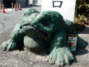
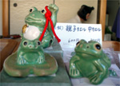
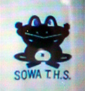

福岡市西公園にカエル神社! 【福岡発エンジョイスペースオーナー様】西公園にカエル神社があります。そこでは毎月２５日にお祭りをしています。
 もともと、「立ち帰る天満宮」という菅原道真を祭る神社だそうですが、立帰る（戻る）という縁起から、戦時中は出征兵士の家族たちが多数お参りにきたそうです。
神社の近くには、四十年前にセメントで誰かが建立した、カエル様の像が、道路をあたたかく見守っています。もちろん、境内には、たくさんのカエルお守りがありました。
マスコットがかえる高校！ 【茨城発ゆかちん同志記者】私が行っていた高校はなぜかマスコットキャラがカエルだった。学校指定のジャージやＴシャツにカエルが付いていて、学年ごとに色分けされていた。しかも！野球応援の曲にもカエル歌があったカエル好きの私にはたまらなかったよ。この写真がカエルジャージにプリントされていたカエル様です。 こんな歌もありました。カエルの夜まわり ゲーコゲコガコ ピョーンピョン ゲコ ピョン ガコ ピョン ゲコガコピョン�� ピョンはみんな手を上げて飛ぶんだよ�捧､ 茨城県立総和工業高校
【全国かえる奉賛会】 えええええええ。ゆかちん！こんな高校があるなら。きょうからサラリーマンやめて高校生になりたいぜえええええ。頼むよお。すばらしい高校の同窓生諸君。さらなる情報を求む！
天気予報のホームページにかえるのバナー！【日本発がまおやぶん同志記者】明日の天気は？と思い、天気予報のホームページを見るとかえるのバナーが！思わずクリックしたところJAのホームページに飛びました。なんと、JAのホームページでもかえるがマスコットになっています。
やはり、お米⇒田んぼ⇒かえるというつながりなんでしょうか。
ケロロ軍曹がアニメ化！【日本発Ｇブル同志記者ほか】カエルが主人公のマンガといえば、あの偉大なる「ピョン吉」様ですが、この春に新しいカエル（？）を主人公にしたマンガがテレビで放映されるそうです。主人公はカエル型宇宙人・・・地球征服をもくろむカエルの姿をした宇宙人が、日本のある家庭で大暴れっ！典型的な少年ギャグマンガなのですが、結構、面白いかと思います。（原作がコミックで出ています）カエラーから見ると、「…カエル？」というような風体ですが、ぜひ、一度見てみてください。 ４月からテレビ東京系で放送されます。 冬のカエルお絵描き展閉幕！【福岡かえる展６実行委員会】２月１６日深夜から、福岡市中央区天神の三越１階にある長さ８０メートルの通路脇に展開する、『パークサイドギャラリー』に、過去五回のカエル展でみんなに描いてもらったカエル絵１３００枚を一挙に公開しましたあああ。みなさんありがとおお。来年も同じ時期にするつもりです。
|
メールマガジン登録
メールマガジン解除
Powered by


かえる古新聞過去に取り上げた記事を見出し付きで一覧したい人は、ここをクリック◆創刊号を見る◆先週号を見る◆話題の号を見る◆かえる新聞の昔を読む
|
私も入っています。。全国かえる奉賛会
大王様に会うには、このバナーをクリック。ずっと奥に写真館があるぞ。全国かえる奉賛会に入会するには、自分のホームページのどこかに、下の部分を追加するとバナーがリンク付きで表示されるぞ。どんどん入会しましょー |


|